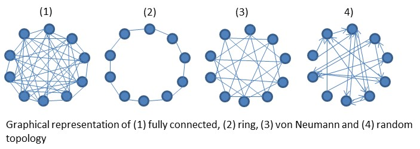
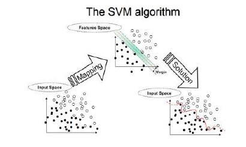
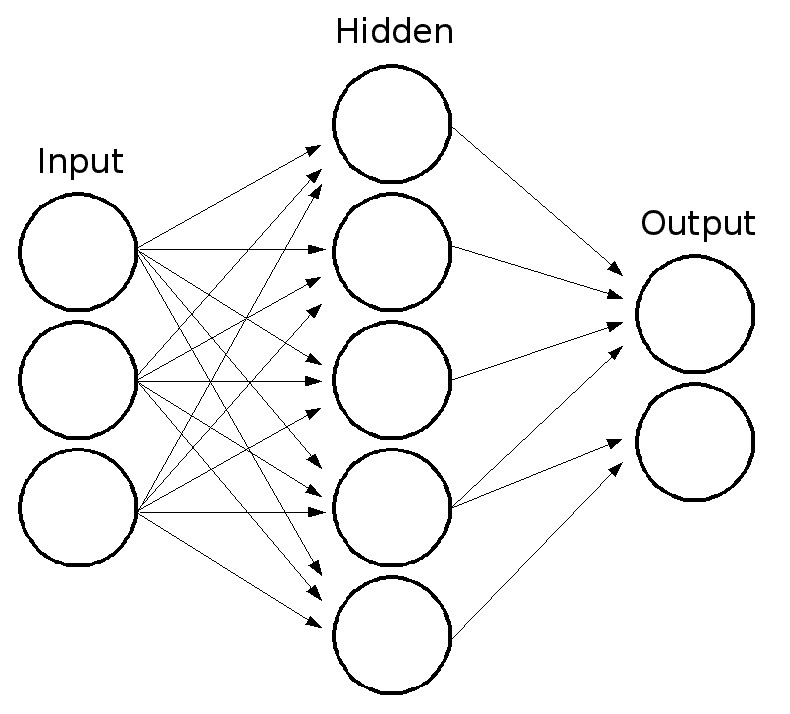

Classification
Two classification techniques were analyzed: Particle Swarm Optimization with Support Vector Machine (PSO-SVM) and Particle Swarm Optimization with a Radial Basis Function Network (PSO-RBFN).
Particle Swarm Optimization
Particle swarm optimization (PSO) is a population-based stochastic approach for solving continuous and discrete optimization problems. It belongs to the class of swarm intelligence techniques that are used to solve optimization problems.
In particle swarm optimization, simple software agents, called particles, move in the search space of an optimization problem. The position of a particle represents a candidate solution to the optimization problem at hand. Each particle searches for better positions in the search space by changing its velocity according to rules originally inspired by behavioral models of bird flocking [5].

In PSO, the so-called swarm is composed of a set of particles P={p1,p2,…,pk} . The position of a particle corresponds to a candidate solution of the considered optimization problem, which is represented by an objective function f. At any time step t , pi has a position x⃗ ti and a velocity v⃗ ti associated to it. The best position that particle pi (with respect to f) has ever visited until time step t is represented by vector b⃗ ti (also known as a particle's personal best). Moreover, a particle pi receives information from its neighborhood Ni⊆P . In the standard particle swarm optimization algorithm, the neighborhood relations between particles are commonly represented as a graph G={V,E} , where each vertex in V corresponds to a particle in the swarm and each edge in E establishes a neighbor relation between a pair of particles. The resulting graph is commonly referred to as the swarm's population topology as in “Fig. 2” [6].
The PSO algorithm starts by generating random positions for the particles, within an initialization region Θ′⊆Θ. Velocities are usually initialized within Θ′ but they can also be initialized to zero or to small random values to prevent particles from leaving the search space during the first iterations. During the main loop of the algorithm, the velocities and positions of the particles are iteratively updated until a stopping criterion is met. The update rules are shown in (1) and (2) where where w is a parameter called inertia weight, φ1 and φ2 are two parameters called acceleration coefficients, U⃗ t1 and U⃗ t2 are two n×n diagonal matrices in which the entries in the main diagonal are random numbers uniformly distributed in the interval [0,1) . At each iteration, these matrices are regenerated. Usually, vector l⃗ ti , referred to as the neighborhood best, is the best position ever found by any particle in the neighborhood of particle pi , that is, f(l⃗ ti)≤f(b⃗ tj)∀pj∈Ni . If the values of w, φ1 and φ2 are properly chosen, it is guaranteed that the particles' velocities do not grow to infinity [6].

The three terms in the velocity-update rule above characterize the local behaviors that particles follow. The first term, called the inertia or momentum serves as a memory of the previous flight direction, preventing the particle from drastically changing direction. The second term, called the cognitive component models the tendency of particles to return to previously found best positions. The third term, called the social component quantifies the performance of a particle relative to its neighbors. It represents a group norm or standard that should be attained.
In some cases, particles can be attracted to regions outside the feasible search space Θ. For this reason, mechanisms for preserving solution feasibility and a proper swarm operation have been devised [7]. One of the least disruptive mechanisms for preserving feasibility is one in which particles going outside Θ are not allowed to improve their personal best position so that they are attracted back to the feasible space in subsequent iterations[8].
The PSO used in this paper was tested using a basic two dimensional equation (3). After several iterations, the particles easily converged to X=15 and Y=20. To further test the validity of our PSO, the Rosenbrock equation (4) was used to test for convergence to a global minimum at X=1 and Y=1.

Support Vector Machine
Support Vector Machine algorithm was originally invented by Vladimir N. Vapnik and the current standard incarnation (soft margin) was proposed by Vapnik and Corinna Cortes in 1995 [9].
SVMs are supervised learning models with associated learning algorithms that analyse data and recognize patterns, used for the purpose of classification and regression analysis. The basic SVM, also termed as non-probabilistic binary linear classifier, takes a set of data and predicts, for each given input, which of the two possible classes forms the output.
The SVM training, taking into consideration the training data marked to a specific class, builds a model that assign new data into one category or other. The SVM model is a representation of the data as points marked in space, mapped so that the data of the separate categories are divided clearly by a wide gap. In other words, it constructs a hyperplane, or a set of hyperplanes which can be used for the purpose of classification or regression.
The original optimal hyperplane algorithm proposed by Vapnik in 1963 was a linear classifier. However, in 1992, Bernhard E. Boser, Isabelle M. Guyon and Vladimir N. Vapnik suggested a way to create nonlinear classifiers by applying the kernel trick (originally proposed by Aizerman et al.[9]) to maximum-margin hyperplanes [10]. The resulting algorithm is formally similar, except that every dot product is replaced by a nonlinear kernel function. This allows the algorithm to fit the maximum-margin hyperplane in a transformed feature space. The transformation may be nonlinear and the transformed space high dimensional; thus though the classifier is a hyperplane in the high-dimensional feature space, it may be nonlinear in the original input space.
Support vector machines use a nonlinear kernel function to transform the input features into a higher dimension where the data is more separable [12]. The SVM will create optimal hyper-planes with the largest margin between each class. LIBSVM, a software package was used to create the classifier. Different kernel types were tested: linear, polynomial, radial basis function (RBF), and sigmoid. Support vector machines are a popular newer method of classification and been proven to be very efficient both as a standalone classifier and when combined with other techniques such as fuzzy logic [10] [11]. By changing the cost and gamma of the SVM, accuracy can be fine tuned. This was implemented by using PSO to evaluate the accuracy with various combinations until the particles converged to a local maximum which produced the best results.

Radial Basis Function Network
RBFN is a type of feed-forward Neural Network which consists of three layers: input layer, hidden layer, and output layer as shown in the schematic in Figure 4. The input layer contains n dimensional feature vectors entering the network.
The hidden layer is composed of radially symmetric Gaussian kernel functions as shown in “Fig 3.”
In employing RBFN for classification, finding the appropriate centers for kernel functions has critical importance on the generalization capability of the classifier [11]. Therefore, several clustering algorithms are widely used to supervise the cluster centers. In this study, k-means clustering was used to determine the centroids for the hidden layers. The RBFN was modified to have activation functions as shown in (4). Where β is defined in (5) where b is a parameter passed into the RBFN and σ is defined in (6) as the average distance from all the points in a cluster to the center of that cluster.

The outputs of the hidden layer are connected to the output layer by weighted links.These weights were determined by evaluating the activation values for the RBF neurons for each training sample. These values were then used as inputs to gradient descent to train the weight.
During the testing phase of the data with RBFN, outputs are found by using the weights obtained in the training phase and activation values calculated using the test data. These outputs are compared to a threshold value or to each other in the case of two classes at the end in order to generate binary class label outputs. The RBFN classifier accepted a number of kernel functions and the b power as parameters. This allowed PSO to optimize the number of hidden layers as well as the power used to calculate the β coefficients.
